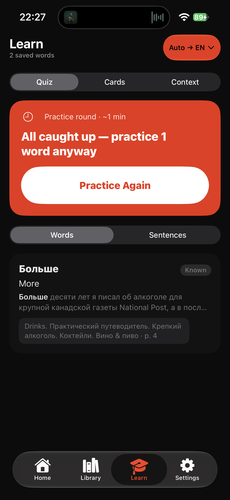
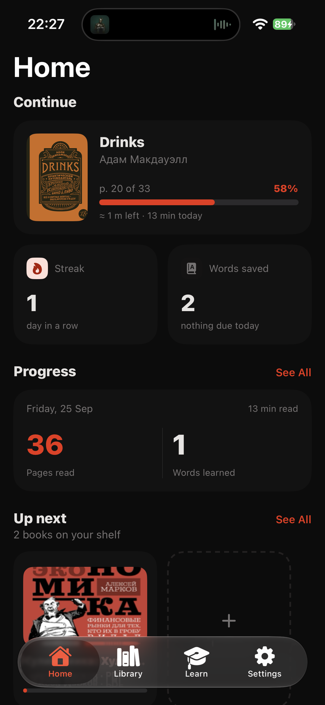
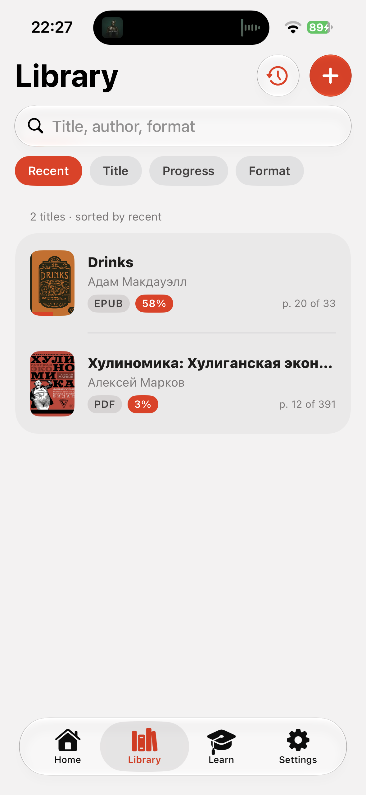
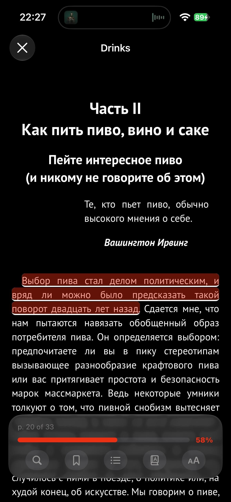

Open your next chapter.
Import a book from Files and settle into a reader with adjustable text, themes, and page turns.
A better way to read in another language
Your books, your curiosity, your next new word. BookWarp lets you translate as you read and turn the words worth keeping into practice that sticks.
Coming to the App Store for iPhone and iPad


THE BOOKWARP LOOP
A thoughtful reading flow keeps you in the story, even when a word stops you.
Import a book from Files and settle into a reader with adjustable text, themes, and page turns.
Select a word or sentence to see its translation without losing your place. Save the ones you want to remember.
Revisit saved vocabulary through quick quizzes, flashcards, and the context where you first found it.
MADE FOR THE WAY YOU READ
Keep EPUB, PDF, and FB2 books on your shelf. Find a title fast and pick up from your last page.

Choose light or dark, adjust the text, and translate a selection when you need it.

Practice with quizzes or cards, then return to the original sentence when you need a reminder.
PRIVATE BY DESIGN
BookWarp keeps your books, progress, bookmarks, and saved vocabulary in app storage on your device. Translation uses Apple’s on-device framework.
Read the privacy policyA GOOD BOOK CAN TAKE YOU ANYWHERE
BookWarp is coming to the App Store.
Questions? Get support